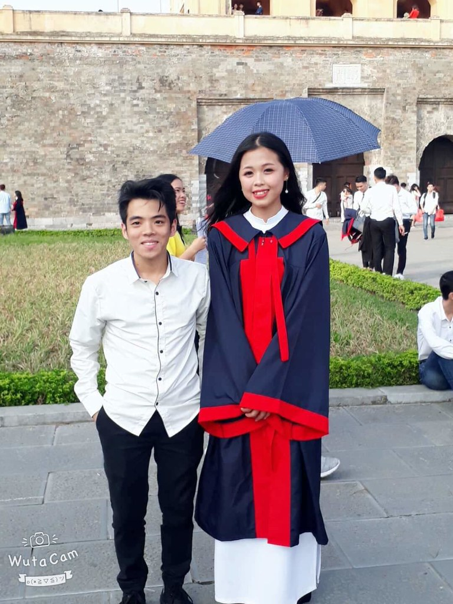

Có lẽ hạnh phúc cũng sẽ đến thôi nhưng tiếc chẳng phải là bây giờ
Blog của Akira Phát
Tình yêu đến với ta bất chợt đôi khi chỉ vô tình lướt qua thôi nhưng cũng đủ để làm trái ta rung động. Có khi tình yêu lại là sự nhẫn tâm đã cho ta bao kỉ niệm mà lại hòa lẫn với những giọt nước mắt rơi trên khóe mi.Và những nỗi nhớ không tên...
Thanh xuân của tôi
Một là đừng gặp gỡ , để khỏi quyến luyến.Hai là đừng quen biết để khỏi tương tư nhiều.
Thực ra trên tất cả chúng ta chỉ cần một giấc ngủ ngon, một người yêu mình và một công việc ổn định.
Thanh xuân của tôi
Có những cảm xúc đến với ta bất chợt, nhưng nó chưa đủ để làm bạn yêu. Nó như những bong bóng xà phòng: đẹp đẽ, căng tròn, nhiều màu sắc khiến ai cũng để ý... nhưng khi chạm vào thì mọi thứ biến mất vô hình. Có những người cho ta nhiều rung động đầu đời nhưng ta chỉ muốn ngắm nhìn và giữ quan hệ như thế này mãi mãi
Thanh xuân của tôi
Thanh xuân là quãng thời gian đầy sóng gió bởi vì lúc ấy chúng ta không biết câu trả lời là gì. Chúng ta không biết bản thân thực sự muốn cái gì, ai thật lòng yêu chúng ta, chúng ta thật lòng yêu ai. Đó là quãng thời gian chúng ta cứ quẩn quanh đây đó, tìm kiếm câu trả lời. Và rồi khi chúng ta bất ngờ biết được câu trả lời. Bất giác chúng ta đã trưởng thành, đã trải qua những lần li biệt khi ít khi nhiều.